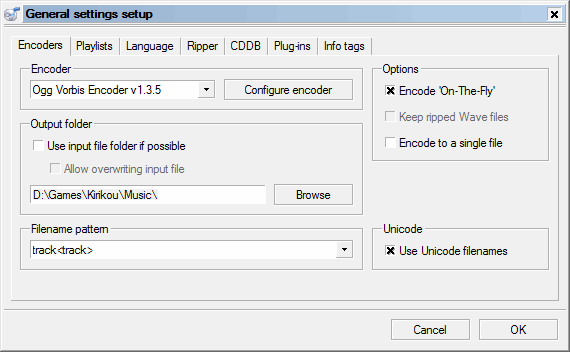
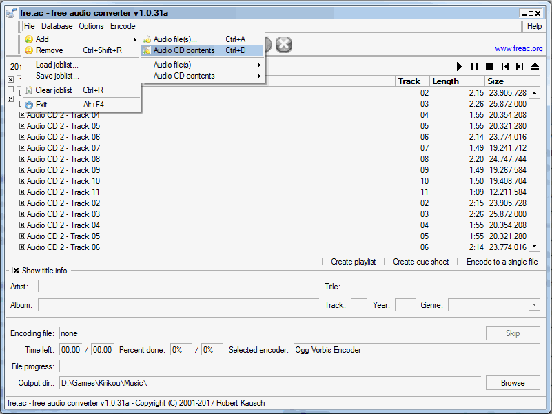
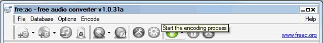
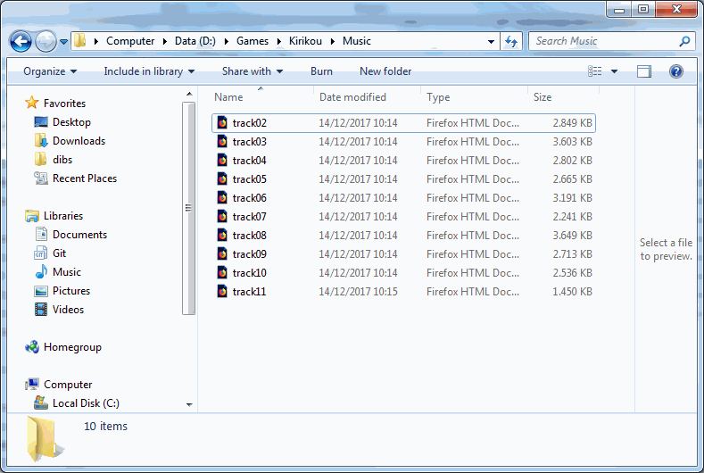
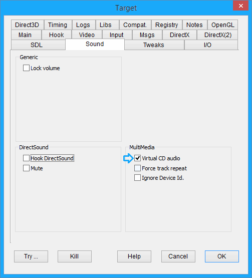

Virtual CD Audio Tutorial
Preface:
Early days of PC CD Rom games saw a lot of available space (600 MB or a little more) for relatively small games and slow computers. It happened quite naturally that the gap between the needed and available space went filled by audio tracks. In addition, early cd readers were often equipped with a direct cd audio connection bringing the audio signal to the speakers with little or no burden for the CPU. At present, the situation is changed a lot: bigger games on DVD or downloadable from the net can't use audio tracks and DVD readers no longer have a direct audio connection, so that playing an old game with cd audio tracks is often impossible or causing continuous swapping of the cd reader heads. But more powerful and multi-threaded CPUs make it possible to play audio from audio files on hard disk. Several game ports for recent platforms use this technique, usually transferring the audio tracks on ogg files in ogg/vorbis format and emulating the cd interface. Now it is possible to make the same also with DxWnd and also in the case you don't have a ported game but the original cd! The document explains the steps to grab the audio tracks, install them on hard disk and configure DxWnd so that it will play them.
Extracting audio tracks:
The first step is to get the audio tracks out from the cd and on hard disk in one ot the supported formats (ogg/vorbis since v2.04.97, also mp3, flac and wav formats from v2.04.98). There is plenty of tools able to make it, but I'm explaining one of them that I picked between the open-source ones: Fre:ac (https://www.freac.org) hosted on the same SF open source service than DxWnd. It should be noted that you can extract audio tracks both from a real (physical) cd and from a virtual cd (i.e. a cue/bin image mounted with a cd emulator able to emulate audio tracks. The operation is fairly simple: mount the cd, run Fre:ac and...
1) In the "General settings setup" select the files output folder. A wise decision to avoid moving the files later is to extract the files in the “Music” subfolder of the target game. The screenshot shows my extraction for Karikou audio tracks (in D:\Games\Kirikou\Music). Also setting the filename pattern to track<track> saves a lot of boring manual renaming of the files.
2) Select the file format: Selected encoder: Ogg Vorbis Encoder.

3) Open the cd: File->Add->Audio CD contents. Once selected, the track list should be populated with all available tracks. Be sure that they are all selected. During the operation fra:ac will try to compare the tracks with its internet track database to possibly identify the songs. Ignore possible errors and skip as much as possible.

4) Press the green play icon (Start the encoding process) to start the extraction. In the end you'll have the selected folder filled with the audio tracks.

Preparing DxWnd cd audio emulator environment:
DxWnd audio emulator expects up to 99 audio tracks in the Music subfolder of the game folder. So, copy or move the extracted files there if the extraction was done in another folder.
Then, the filename must have this structure:
tracknn.ext
where nn is a 2 digits, zero padded enumerator like 02, and .ext is the file extension telling the encoded format (either .ogg, .wav, .mp3 or .flac). Please, note that the number must correspond to the actual track number so that, in a typical mixed-mode data/audio CD track01 is where the data track of the game and music starts form track02. Any missing track file in the sequence will automatically be considered as a data track with duration of 4 seconds. So, the following picture shows how the folder should look like:

DxWnd offers the possibility to emulate the dynamic switch of multiple audio CDs. This may typically help running games that occupy multiple CDs with audio tracks. In order to do that, the extracted audio tracks must be placed in a separated folder following this rule: Music holds the first disk, Music02 holds the second disk, Music03 holds the third disk and so forth, up to a maximum of 9 CDs. You can use the "CD charger" panel to switch disk content. The switch is performed in any case only at the end of a mci command, so for instance the play of an audio track won't be interrupted.
First time the CD audio content is accessed, DxWnd creates an audio track index file named "tracklen.nfo" that will cache the relevant information about each track. If you want to update the content of a Music folder it is then necessary to also delete the current traklen.nfo so that DxWnd will create an up-to-date new one.
Configure DxWnd:
This is the easiest part: you only need to check the “Sound / Virtual CD audio” flag in the expert mode configuration tabls.

CD charger:
If the program needs to access different audio CDs you can use the "CD charger" panel to switch the CD inserted in the virtual drive. If the program configuration includes also virtualization of the CD file system, the virtual CD folder will be updated accordingly.

Troubleshooting:
Well, the cd audio emulator relies on wrapping the winmm mci interface that is a quite big and complex interface, and cd emulation is quite immature, so not all parts of it are implemented. Chances that in a new case the emulation won't work are high, but you can post your case on DxWnd SF forum and I'll be happy to analyze and fix it for you. In addition, remember also to examine the game settings and enable CD audio and raise CD audio volume, two settings that are often separated from audio effects (SFX).
Note: Some games may use a different library to interface with the CD audio playback (for example MSS32.DLL). In this case you may need to add this to the Hook tab "Hook-Additional modules".